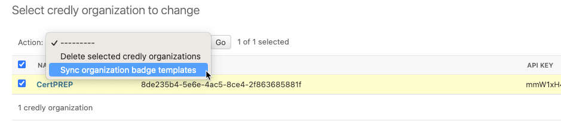
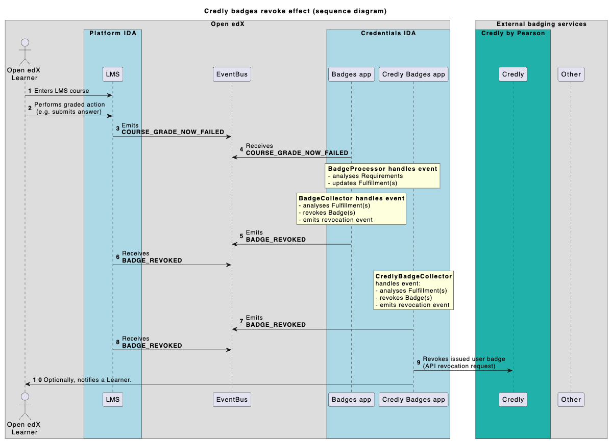

Distribution#
Credentials Badges feature is self-contained, but it allows badges distribution (propagation) to external services as well.
Badge distribution backends are Credentials plugins (auto-discovered installable applications) which highly rely on internal badges application, but extend its functions.
Badges backend may be responsible for:
communication between external service and Open edX (Credentials);
implementation of service-specific badge templates (credential types);
earned (issued) learners’ badges propagation to corresponding services’ user profiles;
additional side effects (e.g. users notification);
etc.
Note
There is Credly (by Pearson) built-in backend which may serve as an integration example.
Credly backend#
Overview#
Credly badges distribution backend is implemented as a baked-in plugin (it is prepared to be extracted into a separate repo).
# package location:
credentials/apps/badges/distribution/credly/
This application extends the core badges functions in the following ways:
another section appears in the Credentials admin interface;
new badge template type is available for configuration;
new specific user credential type is produced;
Credly’s API integration configuration is available (per Credly Organization);
- a set of automations is provided:
badge templates are pulled for each Credly Organization;
- additional actions happen during badges progress collecting:
TBD

Configuration#
Credly badges extension allows Credly web service API authorization configuration.
Note
Backend is configured to use (configurable from deployment environment) these settings:
# production:
CREDLY_API_BASE_URL = "https://api.credly.com/v1/"
# sandbox:
CREDLY_API_BASE_URL = "https://sandbox-api.credly.com/v1/"
Organizations#
Credly service has a concept of Organizations (Credly Organization). Integration happens in a context of one or more Credly Organizations to a single Open edX installation.
Credly Badges application allows Credly Organizations management via admin interface:

CredlyOrganization record represents API credentials (ID and API key) for a specific Credly Organization.
On each Credly Organization record’s update plugin validates provided information by trying to fetch corresponding Credly organization details. Additional information is auto-filled on success.
Badge templates management#
Credly badge templates are linked to their organization.
The backend provides its own badge templates type (origin = credly):
CredlyBadgeTemplate(BadgeTemplate):
"""
Extended version of the core BadgeTemplate data model implementation.
In addition to standard field set also includes extra attributes from Credly badge template.
"""
- - - core properties - - -
- uuid
- name: <template-name>
- description: <template-description>
- icon: <template-image_url>
- - - specific properties - - -
- organization: <CredlyOrganization (relation)>
- state: "draft" | "active" | "archived" (managed by Credly)
- origin: "credly"
Under the hood CredlyBadgeTemplate data is split onto 2 data tables:
core BadgeTemplate attributes are placed into a separate table, so badge templates with
credlytype are completely valid from perspective of the main badge application;extra CredlyBadgeTemplate attributes are kept in a separate table and linked 1-1 to the core data (Django model inheritance);
Badge templates creation#
It is expected that Credly badge templates are pulled for each configured Credly Organization (e.g. auto-created).
To mirror all existing Credly badge templates, navigate Credly Organizations list view, then select wanted organizations in a list and use Sync organization badge templates action.
There is
sync_organization_badge_templatesmanagement command as well.
The action will iterate through selected Credly organizations and:
Pull available for Organization badge templates from Credly API:
GET /organizations/<organization_id>/badge_templates
Create
CredlyBadgeTemplaterecords for each available template.
Keeping badge templates in sync#
Credly service provides webhooks support for different internal events.
This Credly Badges backend implements a webhook endpoint to listen to incoming updates for badge templates.
POST <CREDENTIALS-HOST>/credly-badges/api/webhook/
To communicate an additional configuration is required on the Credly side (here is the Sandbox configuration example):
Set a full URL for your Credentials installation.
Activate badge template events.

The following Credly badge templates webhook events are processed:
badge_template.created(event is triggered whenever a badge template is created)system creates new
CredlyBadgeTemplatein inactive state;badge template is not processed until manual activation;
badge_template.changed(event is triggered whenever a badge template is edited)system updates corresponding
CredlyBadgeTemplaterelevant attributes;badge template processing continues;
badge_template.deleted(event is triggered whenever a badge template is deleted)system deactivate corresponding
CredlyBadgeTemplate;badges issuance processing stops;
Requirements setup#
TBD
Created badges must be configured.
Desired Requirements are created for each badge template manually:
create a Requirement for a single course with specific ID for completion event.
create a Requirement for a single course with specific ID for revocation event (reverse effect).
CCX courses#
TBD
Both event types (for passing course grade and failing course grade) carry additional information for custom courses identification.
Awarded badges#
Already awarded badges are stored as UserCredential records.
Credly backend manages its own extended version of user credential:
CredlyBadge(UserCredential):
"""
Earned badge.
"""
- - - unified attrs - - -
...
- uuid
- username: <username>
- status: "awarded" | "revoked"
...
- - - specific attrs - - -
- issued_badge_id: <uuid>
- issued_at: <timestamp>
- accept_badge_url: <URL>
Side effects#
Badge Collector emits signals when:
There are events which may be used as triggers for distribution side effects:
- on award:
credentials.apps.badges.distribution.credly.handlers.notify_user_awarding
credentials.apps.badges.distribution.credly.handlers.issue_badge
- on revoke:
credentials.apps.badges.distribution.credly.handlers.notify_user_revocation
credentials.apps.badges.distribution.credly.handlers.revoke_badge
Badge issuance#
Badge issuance side effect is performed via issue a badge Credly API endpoint. Required fields:
recipient_email: <user-email>
issued_to_first_name: <str>
issued_to_last_name: <str>
badge_template_id: <credly-badge-template_id>
issued_at: <timestamp>
Badge revocation#
Badge revocation side effect is performed via revoke a badge Credly API endpoint.
Required data: badge_id
PUT /organizations/<organization_id>/badges/<badge_id>/revoke
{
"reason": "Check bounced",
"suppress_revoke_notification_email": false
}
More details#
Here are some details which should clarify how the feature works.
Credly badges initial setup#
- Initial setup (1-4)
As a general prerequisite in order to integrate with Credly we must have Credly account (here represented with a single Organization). API interaction requires authorization credentials for the Open edX installation.
- Open edX configuration (5-6)
Open edX installation (Credly API client) setup. Includes creation of a configuration record which must allow authorized interactions with Credly’s API.
- Badge templates management (7-10)
Once API is available, Open edX badges can be bulk-created based on Credly Organization badge templates. Credly Badges backend caches extra data from templates.
- Requirements setup (11-13)
Each created Open edX badge can be quickly configured for a pre-defined rules. Additionally each requirement must be specified to make award/revoke rules more specific.
Badge awarding flow#
- Grade update (1-2)
Learner acts for course grade update. Learner’s grade satisfies course’s grading policy.
- Event propagation (3-4)
Course “completion” event is emitted from LMS to Event Bus. Course “completion” event is consumed on the Credentials side.
- Badges Processor
Processor receives event. All relevant Requirement records are analyzed for Event. Corresponding Fulfillment records are updated for User.
- Badges Collector(s)
Collector analyzes Fulfillments completion. If ready badge is awarded (user credential record is created). Badge awarding event is emitted from Credentials to Event Bus. Credly API request for badge issuance is sent. Other side effects are possible (e.g. user notification).
Badge revocation flow#
Revocation flow mirrors awarding flow.
